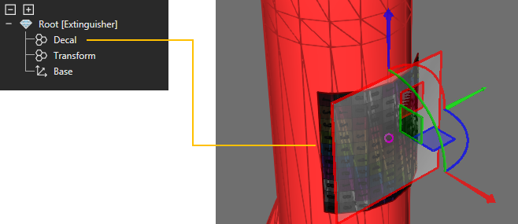
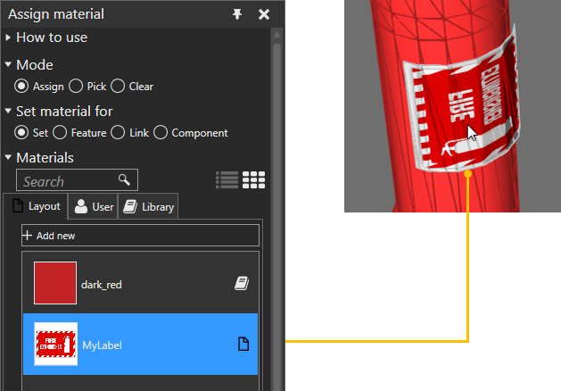

Adding a Decal
A decal can be added to a component by using geometry to preform a shape
with texture coordinates. The added shape is contained in a new Geometry
feature, which you should assign a material. In most cases, the material
of a decal has a texture file, for example an image that can be mapped
to a surface.
- In the 3D world, select a component.
- On the Modeling tab,
in the Geometry group, click the Tools arrow, and then under Material,
click Add Decal.
- In the Add Decal task
pane, set Width and Height
to change the size of the decal preview.
- Move the decal preview to the desired location
on the component, for example one area of its surface.

- In the Add Decal task
pane, set U Tiling, V
Tiling and Offset to the desired
values, and then click Decal.

- If you need to make changes to the decal, for example
its UV tiling, edit the decal preview and generate a new decal, and
then delete the Geometry feature of the old decal.
- On the Modeling tab,
in the Geometry group, click the Tools arrow, and then under Material,
click Assign.
- Use the Assign material
task pane to assign a material to your decal in the 3D world.
